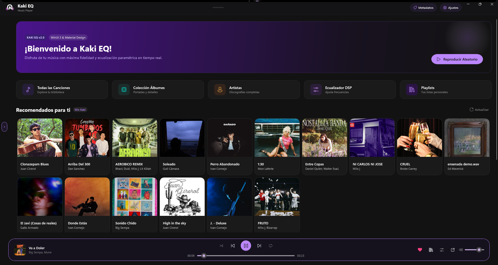
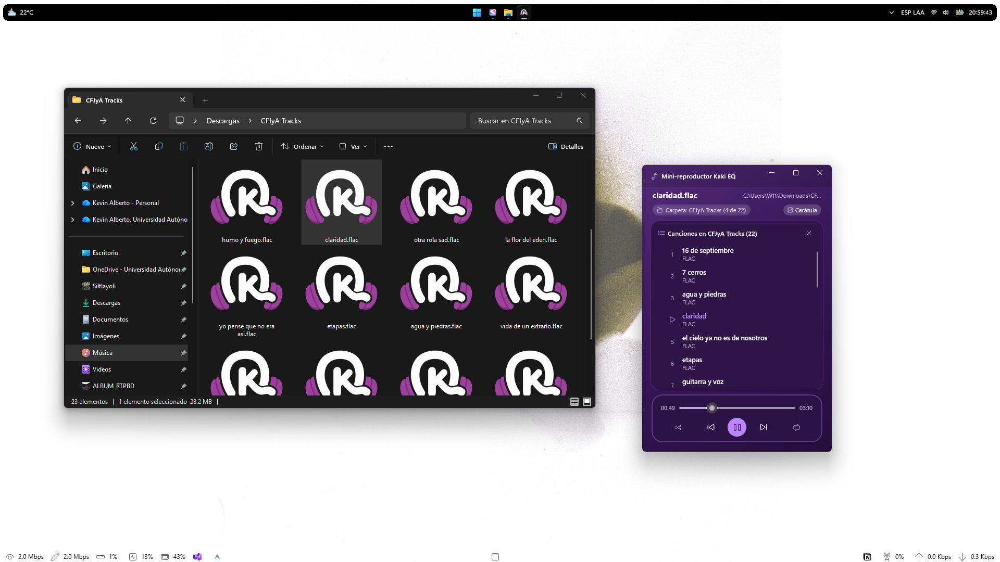
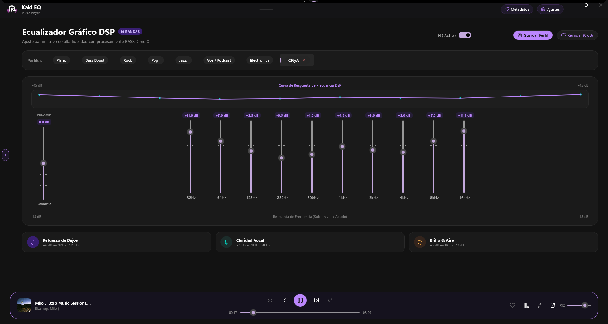
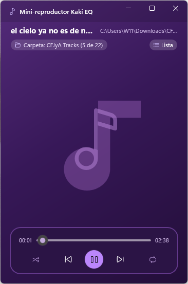
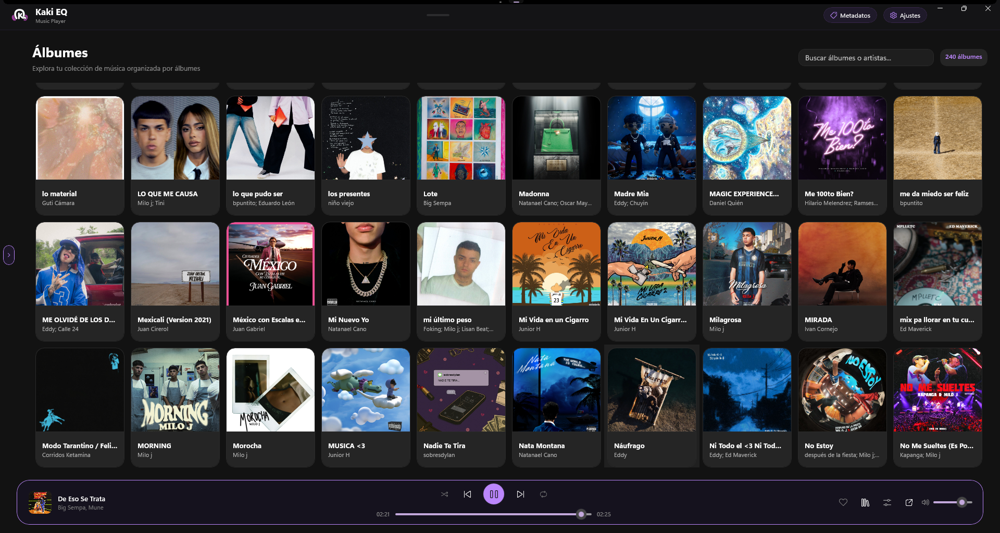
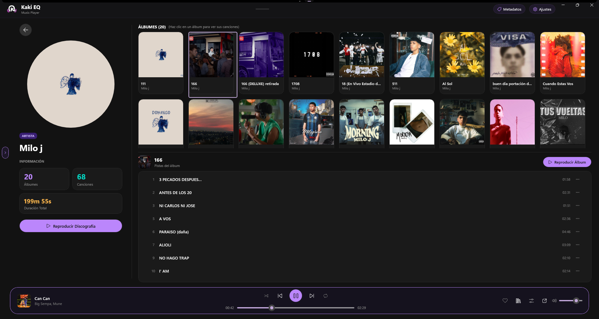
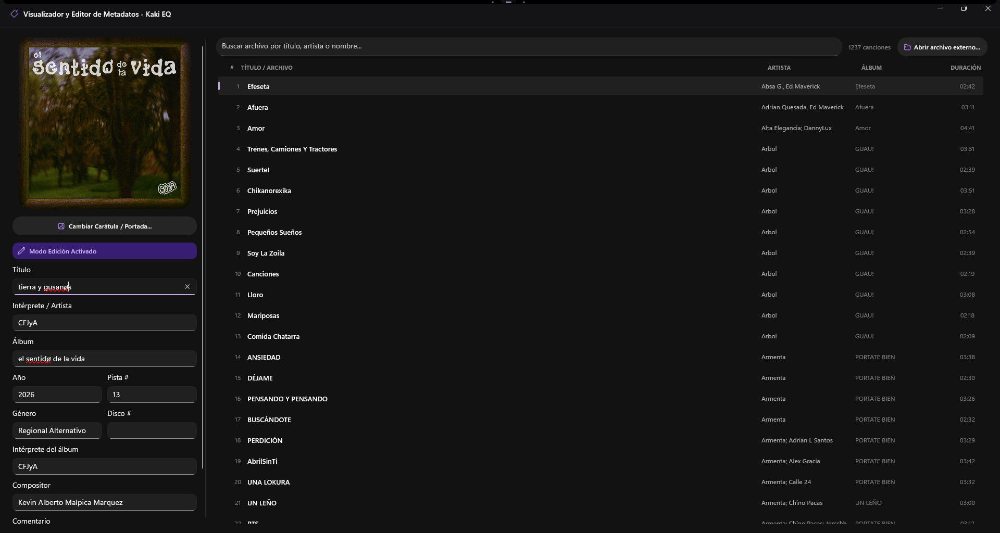
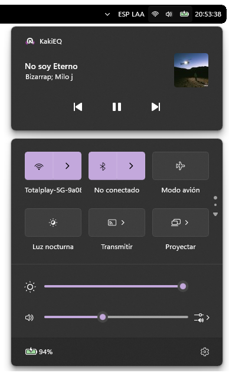

Tu música con fidelidad de estudio y ecualización profesional.
El reproductor multimedia de próxima generación para Windows 11 y 10. Equipado con un ecualizador paramétrico DSP de 10 bandas, motor de audio DirectX BASS, Dispositivo de Audio Virtual con salidas simultáneas sin desfase, aislamiento vocal por IA para karaoke y mini-reproductor flotante.

Experimenta el Ecualizador Gráfico de 10 Bandas
Ajusta cada una de las 10 frecuencias con precisión quirúrgica (-15 dB a +15 dB). Observa la curva de respuesta de frecuencia en tiempo real y prueba el audio sintetizado directamente en tu navegador.
Ecualizador Gráfico DSP
10 BANDASDiseñado para los Amantes de la Buena Música
Combina la potencia del procesamiento de audio profesional con una interfaz fluida, moderna y respetuosa con los recursos de tu PC.
Motor DirectX BASS
Decodificación de audio nativa de 32 bits en coma flotante con ultra baja latencia. Garantiza una reproducción nítida, sin artefactos ni distorsión, incluso al aplicar ganancias elevadas.
Modo Karaoke con IA
Separa la voz de los instrumentos en tiempo real. Convierte cualquier canción de tu biblioteca en una pista instrumental instantánea para cantar o disfrutar de arreglos puros.
Letras Sincronizadas (LRC)
Visualización dinámica de letras que se desplazan y resaltan verso a verso al compás exacto de la melodía. Ideal para acompañar tus sesiones de escucha y fiestas de karaoke.
Mini-Reproductor Flotante
Un widget ultracompacto que flota sobre cualquier videojuego o programa de trabajo. Controla volumen, pistas y visualiza carátulas sin perder foco de tu pantalla principal.
Integración Nativa WinUI 3
Construido con Windows App SDK y materiales Mica y Acrylic auténticos. Incluye controles multimedia del sistema (SMTC), integración con pantalla de bloqueo y minimizado a la bandeja (System Tray).
Privacidad Total & Sin Cuenta
Tus canciones y listas nunca salen de tu ordenador. Sin registros obligatorios, sin publicidad, sin telemetría invasiva y con un arranque relámpago de milisegundos.
Transforma Cualquier Canción en Karaoke Instantáneo
Gracias al motor de procesamiento integrado, Kaki EQ te permite atenuar o eliminar completamente las frecuencias vocales de la pista sin arruinar la profundidad de los bajos ni la percusión.
- Activación con un solo botón: Pulsa el icono de micrófono y canta de inmediato.
- Letras sincronizadas en vivo: La canción y las líricas avanzan en perfecta sincronía.
- Ecualización simultánea: Combina el modo karaoke con perfiles de voz o refuerzo de graves.

Mini-Reproductor Flotante Picture-in-Picture
No dejes que tu reproductor consuma toda la pantalla. El mini-player de Kaki EQ ofrece 3 modos de compactación con carátula en alta resolución, barra de progreso y botones táctiles.
- Fijación sobre otras ventanas: Mantén el control de la música mientras navegas, editas o juegas.
- Minimizado a bandeja del sistema: Oculta la ventana en el tray icon sin detener la reproducción.
- Controles multimedia nativos: Cambia de tema con las teclas Fn de tu teclado o auriculares.

Explora la Interfaz de Kaki EQ en Detalle
Cada rincón de la aplicación ha sido diseñado con esmero para ofrecer estética moderna, fluidez visual y máxima legibilidad.






Especificaciones Técnicas
Construido para brindar el máximo rendimiento nativo en Windows sin consumo desmedido de memoria.
Formatos de Audio Compatibles
Kaki EQ reproduce y asocia de forma nativa todos los códecs de audio estándar de la industria:
Requisitos del Sistema
| Sistema Operativo | Windows 11 o Windows 10 (Compilación 19041 o superior) |
| Arquitectura | 64-bit (x64) |
| Interfaz Gráfica | WinUI 3 & Windows App SDK (Mica & Acrylic) |
| Motor de Audio | BASS Audio DirectX 32-bit Floating Point DSP |
| Espacio en Disco | ~150 MB (Instalador: 68.3 MB) |
| Memoria RAM | Mínimo 2 GB (Recomendado 4 GB o más) |
| Desarrollador | CFJyA |
Descarga Kaki EQ Gratis
Lleva tu experiencia musical al siguiente nivel. Descarga la versión oficial 1.0.0 compilada para Windows 11 y 10.
Guía de Instalación en 3 Pasos
Descarga el Instalador
Obtén el archivo oficial KakiEQ_Setup_v1.0.exe con un solo clic.
Ejecuta el Asistente
Sigue las instrucciones en español o inglés y asocia tus formatos de música favoritos.
¡Disfruta del Sonido!
Abre Kaki EQ desde el escritorio o el menú Inicio y disfruta de tu música con ecualización DSP.
¿Tienes Dudas sobre Kaki EQ?
Aquí encontrarás respuestas a las dudas más habituales.
Sí, Kaki EQ es 100% gratuito, sin compras dentro de la aplicación, sin muros de pago y totalmente libre de anuncios publicitarios o rastreadores.
Kaki EQ está optimizado para Windows 11 (con soporte nativo para efectos Mica y Fluent 2), y también es totalmente compatible con Windows 10 (versión 2004 / compilación 19041 o posterior) en arquitectura de 64 bits.
El modo Karaoke procesa las señales en tiempo real aplicando algoritmos de aislamiento vocal y filtrado de banda central para atenuar o extraer las voces principales mientras mantiene la instrumentación nítida y sincronizada con las letras.
No. Kaki EQ es un reproductor de música local offline. Puedes reproducir toda tu colección almacenada en tu disco duro, memorias USB o carpetas compartidas sin depender de conexión a internet.
Durante la instalación con el archivo KakiEQ_Setup_v1.0.exe, marca la casilla "Asociar archivos de audio (.mp3, .flac, .wav, .m4a, .aac, .ogg, .opus, .wma)". También puedes configurarlo en los Ajustes de Windows → Aplicaciones Predeterminadas.